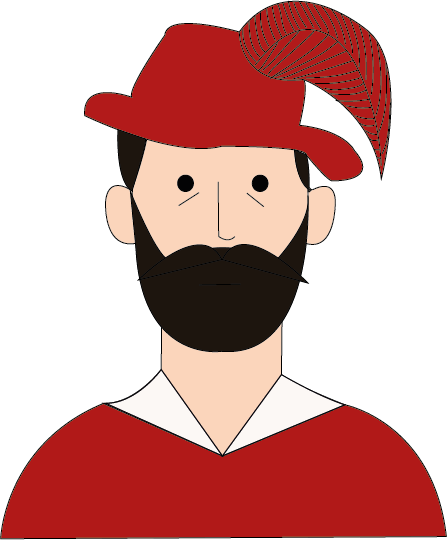

James Ensor


Nascita:
13 Aprile 1860, Ostenda, Belgio
Morte:
19 Novembre 1949, Ostenda, Belgio
Corrente:
Espressionismo



Opere più famose: L’entrata di Cristo a Bruxelles 1888; Autoritratto con maschere 1899
Curiosità: Per i suoi soggetti, Ensor prese spesso spunto dai vacanzieri di Ostenda, che lo riempivano di disgusto: ritraendo gli individui come clown o scheletri, o sostituendo le loro facce con maschere di carnevale, rappresentò l’umanità come stupida, vana e ripugnante.
Citazione: “La mia infanzia è ricca di magnifici sogni”